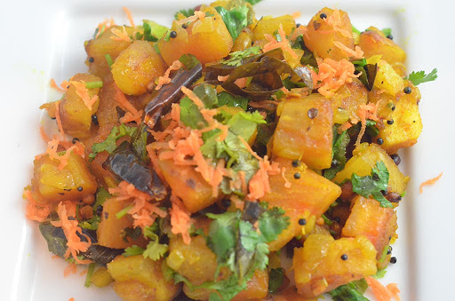
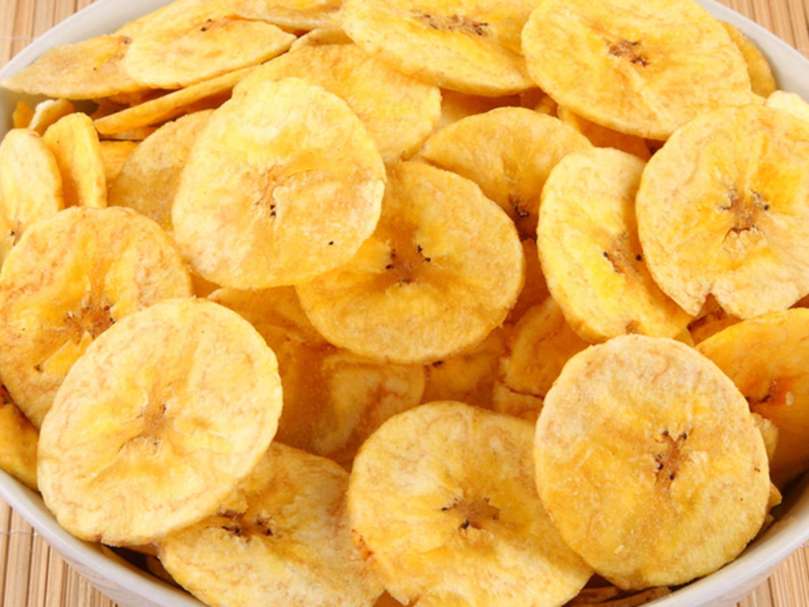
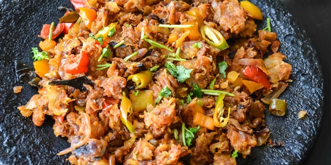
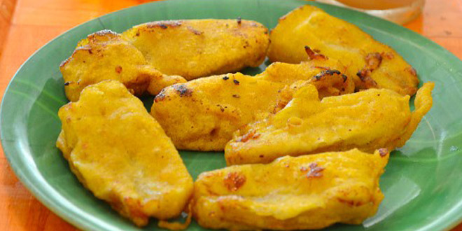
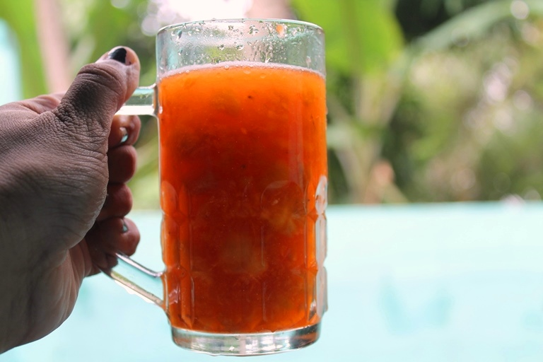
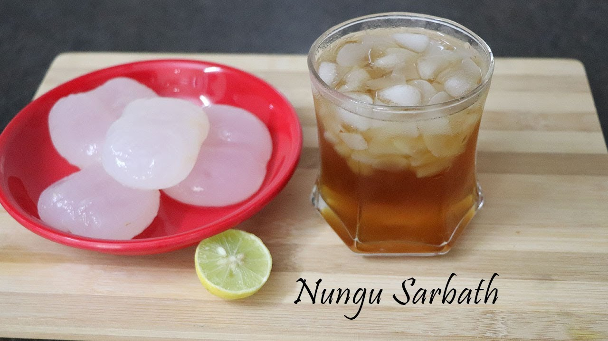
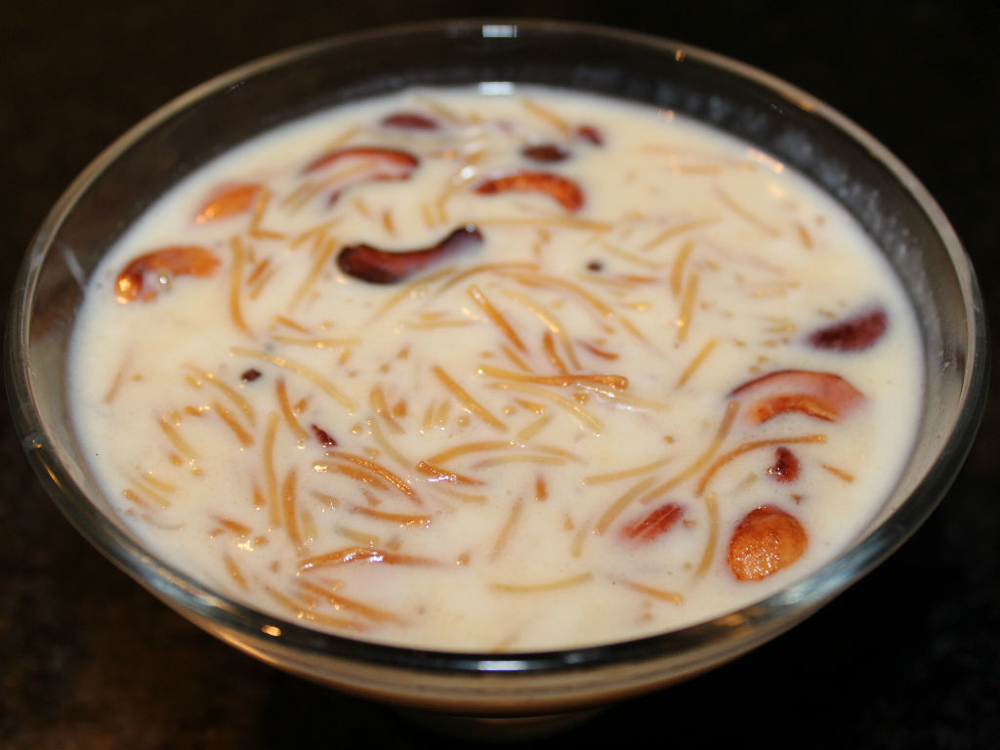

You may have heard of Dosa. Appam, on the other hand, is a Kanyakumari dish that you won't find anywhere else. The Appam blend is a well guarded secret. It is prepared in a wok and is fried on one side and steam cooked on the other.

Maravazhi kilangu (Tapioca Cassava) With Fish
Tapioca is mostly cultivated in Kaniyakumari. When this season comes, farmers dig it out from the field and sell it freshly. Tapioca will be peeled and cut into pieces and boiled in water with salt for taste. When it is been cooked properly, water will be removed and served with Fish Curry.

Banana Chips
Kanyakumari is well-known for its Banana Chips. Anyone visiting Kanyakumari for the first time would undoubtedly be astonished and drawn to the flavour and fame of Banana Chips. The lovely scent of the coconut oil used to cook the chips, as well as the mild quantity of salt and pepper used to bring out the taste, can never fail to make someone fall in love with Banana Chips. Another fantastic experience that you won't be able to have anyplace else than Kanyakumari is seeing how banana chips are created.

Kothu Parotta ( Minced Parotta)
If you're new to Kanyakumari and wander out in the nighttime, you could hear some strange sounds from the hotels' striking irons. Don't freak out. It merely indicates that the hotel's chef is preparing Kothu Parotta or Minced Parotta.However, there is no replacement for Kanyakumari's Kothu Parotta. If you watch how it is created, you will be shocked to watch our local chefs' rapid moving hands over the parottas to mince it together with some chicken or eggs or anything you request.

Pazha bajji
Another distinguishing feature of Kanyakumari District. It's known as Pazha Bajji. If you go to a neighbourhood tea shop, you might see some small yellow coloured cylindrical delicacies. Yes! That is Pazha Bajji. Ripe bananas were dipped in Maida batter and fried till they turned yellow. To get into the banana, you must first get through the yellow batter, and then you will be able to taste the banana. It will undoubtedly be a novel experience for outsiders.

Pazha Sarbath
Wanna beat the heat? Pazha sarbath is available for you in our Kanyakumari. Normally you can see those shops on roadsides during summer. This is made out of mixture of fruits like Banana, Apple, Pineapple, Grapes, Pomegranates and so on which is been minced nicely and mixed with ice and sarbath. It will surely keep you hydrated and energetic and helps you to beat the summer.

Palm Fruit Juice (Nungu Sarbath)
During the summer, you can find this healthful natural drink on the roadsides of Kanyakumari. Palm fruits are combined with Sarbath and chilled ice, and the drink is ready to serve. It can aid with uncomfortable urination, heart rashes, and acidity. So, if you're at Kanyakumari, you should try to get this.

Semiya (Vermicelli) Payasam
Semiya Payaasam is one of the favorite desserts of Kanyakumari people which will be basically served after the food. It is sweet in taste and most commonly made and served in all functions. Unlike other Payasams (keer); Semiya (Vermicelli) Payasam is easy to make.